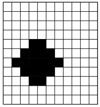
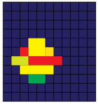
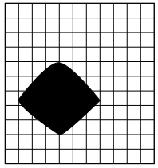

Change detection for SAR Images
An overview of recent techniques
Ammar Mian
What we will consider in this talk
- Pose the problem while highlighting sub-issues
- Give approriate key-words for litterature searching
- Explain and illustrate most popular and recent approaches
This is by no means a complete and systematic overview of all existing techniques.
Aim: To gives key-points to consider for implementing SAR change-detection techniques from a practical stand-point.
Slides are available at: https://ammarmian.github.io/slides/
singapore_11_04_2019/overview_change_detection_SAR.html
For questions: ammar.mian@centralesupelec.fr
Plan of the presentation
Introduction
Change detection issues
Detection problem

Determining places where a change has occured over the time series.
A place can be defined as:
- pixels indices
- spatial coordinates
The detection can be seen as:
- a binary mapping
- a continuous mapping
Binary versus continuous mapping
 Pixel versus object detection
Supervised versus unsupervised detection (1/2)
A technique is defined as supervised when its application needs the use of labeled examples $\{(\mathbf{x}_i,y_i)\}_{i=1,\dots,N}$ called training samples to work. It is a two-step procedure.
First step: Training: find $\hat{\theta}=\mathrm{argmax}_\theta \, \frac{1}{N}\sum_{i=1}^N r(f(\mathbf{x}_i,\theta), \mathbf{y}_i)$
Second step: Testing
Supervised versus unsupervised detection (2/2)
A technique is defined as unsupervised when its application do not need any training sample. This is a one-step procedure.
Only testing:
What type of change ?
There is no universal definition of what a change is. It is an ill-defined problem !
From a practical standpoint:
Man-made changes: appearance/disappearance of vechicles/buildings
But: What if vehicle just rotated or if building finished its construction ?
- Natural disasters: Floodings, fires
- Small variations of terrain
Depending on the definition, false alarms are not the same !
Measure of accuracy
Depend on the problem: classificaiton or distance problem
Classification problem: How many pixels have been accurately classified ?
\[ \mathrm{GD} = \frac{\text{number px well detected}}{\text{number total px to be detected}},\, \mathrm{FP} = \frac{\text{number px falsely detected}}{\text{number px with no change}} \]Distance problem: How well the change dissociate from the no-change ?
Questions to answer when designinga change detection system:
- Do I want a binary map (classification problem) or a continuous map (distance problem) ?Note: a binary one can be otained by thresholding the continuous one
- Do I want to the detection to be dependent of spatial coordinates or do I want a detection at the pixel-level ?Note: It is possible to obtain a segmentation after a pixel-level change detection
- What type of changes do I want to detect ?
- Do I have a large amount of training samples or not ?
Issues encountered in SAR images
Co-registration
Speckle noise and pre-processing
Resolution
Lack of training samples
Multivariate data
Data fusion
A general framework for pixel-level methods
Illustration
Feature extraction
First query: does the data allows to discern the changes (resolution, complex data vs only amplitude, etc)